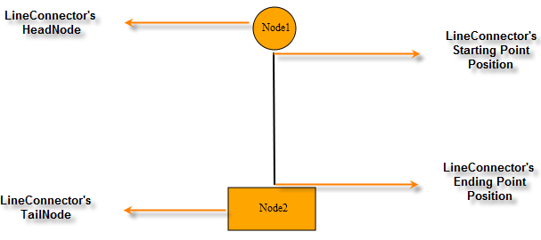

Connectors are objects that are used to create a link between two nodes. Each connector has two ends whose positions can be specified as points or directly connected to the node. One end of the connector can be defined using the Start Point Position or Head Node and the other end can be defined using End Point Position or Tail Node.

Figure 51: Connector End Points Illustrated
|
Property |
Description |
Type of the Property |
Value it Accepts |
Any Other Dependencies/Sub-Properties Associated |
|
Name |
Used to uniquely identify the connector. |
Dependency property |
String |
No |
|
ConnectorType |
Gets or sets the connector type to be used. Three values, namely Orthogonal, Straight, and Bezier can be specified. Default Value: ConnectorType.Orthogonal |
Dependency property |
ConnectorType.Orthogonal ConnectorType.Bezier ConnectorType.Straight |
No |
|
HeadNode |
Gets or sets the head node of the connection. Default value: null |
Dependency property |
IShape |
No |
|
TailNode |
Gets or sets the tail node of the connection. Default value: null |
Dependency property |
IShape |
No |
|
LineColor |
Gets or sets the color of the line. The default value is Black. |
Dependency property |
string |
No |
|
LineWidth |
Gets or sets the width of the line connector. The default value is Black. |
Dependency property |
double |
No |
 Creating a Line Connector
Creating a Line Connector